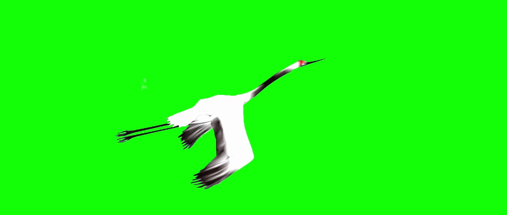
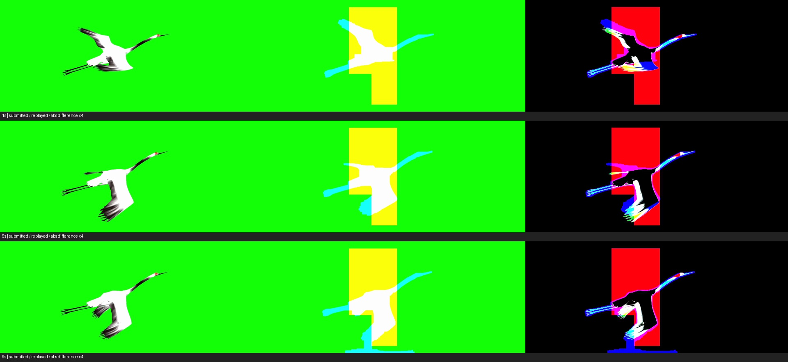

从天空中的白鹤，分离出完整绿幕主体
一段约 10 秒的白鹤飞行视频，一张绿幕外观参考。Agent 需要在 Resolve/Fusion 中去掉天空与云层，同时保留羽翼、细腿、颈部及连续运动，交付可编辑工程和原生渲染成片。
本次 xhigh 复测：本次比较 gpt-6.1-sol 与 gpt-6.1-terra，solver 思考强度为 xhigh，每模型三次。Sol 前两次保留，用户因网关限流将 Terra 替换进原 Luna 计划；替换时尚未进行原生评分。素材、工具和单轮预算保持一致。历史 high 全部结果保留。使用 ALE 锁定版本的评分公式、提示词、断点与阈值；软裁判经授权由默认 gpt-5.4 配置为 gpt-6-astra。模型通过本地 Resolve Lua API 桥接完成操作，成绩对应这一适配设置，与官方 GUI 设置及默认裁判配置有差异。
01 · 任务定义与真实输入

input.png，与原片一同提供给 Agent。它用于参考外观；连续运动仍须来自原视频。给 Agent 的要求
- 从独立空工程开始，在本地 Resolve/Fusion 构建可编辑的抠像、遮罩与合成链路，将全部非主体区域替换为纯绿
#00FF00。 - 保持完整原片时长、分辨率、帧率，以及白鹤原始位置、尺寸和运动。不得裁掉难帧、冻结参考图、生成替代白鹤或直接交付原片。
- 去除天空与云层，尽量保留羽翼、颈部、喙、腿、尾羽和运动模糊，避免明显孔洞、硬切、光晕和闪烁。
- 查看自己的实际导出帧，自主决定是否修正。交付
output.mp4、可导入重渲染的project.drp及说明方法、参数与缺陷的README.md。
输入与任务来自 ALE visual_media/chroma_key_from_reference / crane_flyingsky。模型只获得公开素材、任务说明与 API 文档；隐藏参考在所有模型完成后才进入评分环节。
实验条件与复现边界
| 应用与通道 | DaVinci Resolve Free 21.1.2.10，Windows，本地应用内 Lua 桥接；模型可查询控件、写 Fusion 节点、渲染、观察真实帧、导出 DRP。 |
|---|---|
| 固定预算 | 每轮 90 分钟、160 次工具调用、200 次 API 请求；reasoning = xhigh，每次最大输出 8,000 tokens。 |
| 独立性与纳入规则 | 实际先执行 Sol 1 → Luna 1 → Sol 2 → Luna 2（用户取消），随后 Terra 1 → Sol 3 → Terra 2 → Terra 3。主比较纳入 Sol 与 Terra 各三次；Luna 已有记录留存但排除，Luna 3 未启动。每次为新工程、新会话，相同输入字节；不提供前轮方案与评分反馈。原始轮次编号保留，不将其当作修订后的时间顺序。 |
| 基础设施续接 | 批次启动前修复了桥接重复请求；Sol 第 1 轮随后经历 Resolve 内存分配失败崩溃与 API 服务中断。检查已执行的副作用后，在原会话、原工程及原预算续接；用户更换 API 密钥后继续。错误与恢复记录保留，未据分数重选运行。 |
| 模型身份 | 记录请求 ID 与网关返回 ID；未独立验证服务背后的模型权重。 |
| 判分差异 | 沿用历史实验中经用户授权的 JUDGE_MODEL = gpt-6-astra，默认 GPT-5.4 不参与本次评分。帧输出沿用已验证的 ASCII 临时目录适配，官方评分源码及锁定版本不变。 |
02 · 六次运行结果
采用 ALE 原生 0–1 量纲，报告全部三次的算术均值和样本标准差。每轮均提供交付格式与 DRP 导入重渲染核验；全部正式输出纳入统计。
样本标准差 0.0383 · 范围 0.4581–0.5347
三次独立交付，全部纳入统计
样本标准差 0.1226 · 范围 0.2932–0.5243
三次独立交付，全部纳入统计
high 与 xhigh 对照
| 模型 | high 三次得分 | high 均值 ± 样本标准差 | xhigh 三次得分 | xhigh 均值 ± 样本标准差 | 均值差（xhigh − high） |
|---|---|---|---|---|---|
| gpt-6.1-sol | 0.525462, 0.522343, 0.482058 | 0.509954 ± 0.024209 | 0.458131, 0.494158, 0.534679 | 0.495656 ± 0.038296 | -0.014298 |
| gpt-6.1-terra | 未评测 | — | 0.479649, 0.524296, 0.293236 | 0.432394 ± 0.122564 | — |
仅 Sol 有同模型的历史 high 基线，两个独立批次各 n = 3；相同素材、预算和评分设置。Terra 未做 high 评测，均值差留空；历史 Luna high 仅在归档中展示。两批日期与接口状态不同，Sol 第 1 轮还经历应用崩溃和密钥切换；未固定随机种子或做配对实验。均值差仅描述本次观测，不能完全归因于思考强度，不代表统计显著性或普遍提升。2026-11-05 high 完整历史页面 · 对照数据 JSON
| 模型 | 轮次 | 原生规则得分 / 1 | 分钟 | 工具 / API 请求 | 格式 / 工程重放 | 原始交付 |
|---|---|---|---|---|---|---|
| gpt-6.1-sol | 1 | 0.458131 | 65.69 | 85 / 110 | 通过 / 通过 | 成片 工程 交付包 |
| gpt-6.1-sol | 2 | 0.494158 | 56.79 | 76 / 79 | 通过 / 通过 | 成片 工程 交付包 |
| gpt-6.1-terra | 1 | 0.479649 | 32.35 | 83 / 84 | 通过 / 通过 | 成片 工程 交付包 |
| gpt-6.1-sol | 3 | 0.534679 | 46.64 | 57 / 59 | 通过 / 未通过 | 成片 工程 交付包 |
| gpt-6.1-terra | 2 | 0.524296 | 45.06 | 64 / 76 | 通过 / 通过 | 成片 工程 交付包 |
| gpt-6.1-terra | 3 | 0.293236 | 18.93 | 62 / 63 | 通过 / 通过 | 成片 工程 交付包 |
用时为运行器记录值，包含该轮的工具、渲染与 API 等待；API 请求数包含重试。n = 3 仅提供初步波动估计，不能保证稳定性。完整结果与恢复记录 ↓
03 · 原片与两模型同步对照
可任选两模型的轮次并跳转到同一时刻。播放器使用正式交付 MP4 原文件；图片预览由实际视频解码。
网页以原片为时间基准校准播放器；浏览器解码可能有短暂漂移。精确观察评分时点可使用下方静帧和原始视频。浏览器显示也受视频像素宽高比影响，交付中的窄黑边等细节保留原样。
04 · ALE 原生规则与逐帧得分
官方断点为 1、3、5、7、9 秒。每个断点先检查输入结构保留与软判分门槛，通过后计算边缘质量，最终取五帧均值。
frame_score = 0.30 × full_frame_edge_iou + 0.70 × roi_edge_iou
否则 frame_score = 0；run_score = 五个 frame_score 的均值。
本例官方断点未指定局部框，原生实现回退到全画面，因此 full 与 ROI 的边缘 IoU 相同。Soft 为三项 YES/NO 的均值：做了实际抠像、不是原片拷贝、主体合理保留。roi_input_cv 是原生结构指标，不等同于完整主体质量。
| 时间 | roi_input_cv | soft | full edge IoU | ROI edge IoU | 两项门槛 | 帧分 |
|---|
本次门槛统计：本次 xhigh 共 30 个断点，其中 30 个通过两项原生门槛；主体保留被判 NO 的断点为 0 个。主体保留单项不是独立否决项：另外两项为 YES 时，soft = 2/3，仍可通过 0.5 门槛。全部按原版规则计分。
这套评分只覆盖五个时点，软检查也较粗。它不充分度量全片的时域闪烁、运动模糊、色彩污染或专业交付观感；以下分析结合实际输出与工具记录说明问题，没有另外加减分。
05 · 运行轨迹：观察、调参、渲染与修正
每条记录包含实际工具参数、模型提供的操作理由、返回结果和当时看见的真实媒体帧。可按工具、关键词和错误筛选，查看 Lua 与 Fusion 节点代码。
| 模型 · 轮次 | 工具总数 | Lua / Fusion 粘贴 | 渲染调用 | 观察图 | 工具错误 | 完整轨迹 |
|---|---|---|---|---|---|---|
| gpt-6.1-sol · 1 | 85 | 28 / 2 | 17 | 229 | 3 | 浏览轨迹 → |
| gpt-6.1-sol · 2 | 76 | 23 / 2 | 14 | 145 | 2 | 浏览轨迹 → |
| gpt-6.1-terra · 1 | 83 | 27 / 0 | 21 | 140 | 0 | 浏览轨迹 → |
| gpt-6.1-sol · 3 | 57 | 17 / 1 | 10 | 153 | 2 | 浏览轨迹 → |
| gpt-6.1-terra · 2 | 64 | 21 / 5 | 10 | 161 | 1 | 浏览轨迹 → |
| gpt-6.1-terra · 3 | 62 | 22 / 1 | 11 | 105 | 2 | 浏览轨迹 → |
观察图数量含多时点及局部裁切；错误数指工具返回的显式错误，不含 API 传输重试。公开轨迹处理了本地路径与会话信息，保留原记录哈希；操作理由来自工具参数，不含隐藏推理。
06 · xhigh 成片分析与可核查证据
六份正式视频在 1、3、5、7、9 秒均呈现大面积绿幕背景，并保留白鹤的主要拍翼姿态、颈喙与腿部。局部残云、细羽收缩和工程可重放性仍有差别。以下观察来自真实交付与实际工具记录，没有给原生分另加人工权重。
Sol：色差键控、核心支持与灰羽恢复
Sol 1 从白、暗、暖灰等高置信区域建立核心，再用色差与局部闭运算处理孔洞；Sol 2 通过高置信核心和形态学支持保留软边，并加入边缘去天空混色；Sol 3 用蓝通道与较小红／绿通道之差生成 matte，辅以灰羽恢复窗口。五个检查时点里，三份正式 MP4 均保留主要轮廓，未见大块云层残留。
三轮都根据实际渲染帧继续调整，而非只搭建节点后提交。细趾、喙尖、羽丝及快速运动模糊仍可能收缩或软化；五帧检查不足以证明全片没有闪烁。Sol 3 的工程重放问题单列如下。
可核查步骤：Sol 1 · 第 69 步局部补孔 · Sol 2 · 第 42 步核心支撑 · Sol 3 · 第 51 步最终图整理。
Terra：颜色与空间限制，部分轮次加入动态清理
Terra 1 将亮度、近中性与暖色条件结合，使用闭／开运算及细节保护；Terra 2 用局部云抑制区域和 Level 关键帧，在收翼的安全时间窗口清理下方云块；Terra 3 采用核心扩张、色差合成及片头局部关键帧绿填充。三份 DRP 均通过独立导入重渲染的一致性检查。
Terra 2 在 3、5 秒翼部附近、9 秒主体左上方仍可见少量浅云点。Terra 3 的细羽边缘略有简化，说明书也记录了片头约 1 秒附近的残云风险。主要主体保留不代表每一处边界或全片时域质量均准确。
可核查步骤：Terra 1 · 第 50 步形态学修复 · Terra 2 · 第 51 步动态清理遮罩 · Terra 3 · 第 53 步翼尖检查。
Terra 3 的低分来自边缘匹配：五个断点均通过 ROI 与 soft 门槛，三项软判断均为 YES；全图／ROI 边缘 IoU 只有 0.285925–0.312638，五帧均值为 0.293236。该轮显著拉大 Terra 的样本标准差。软检查通过只说明完成了抠像并合理保留主体，仍需边缘指标区分与官方参考的细部差异。 · 原始数值

Sol 3：正式视频与 DRP 重放出现可复现差异
Sol 3 的正式 MP4 呈现正常的绿幕抠像，但原字节 DRP 导入新工程后，重渲染出现黄色矩形和青白色主体区域。两次独立导入均得到相同的七帧差异；首次全画幅 RGB 平均绝对误差为 11.18–12.55（8-bit），未通过预设的 < 3 阈值。第二次检查只更换诊断输出目录，没有修改节点、覆盖首次报告或增加 solver 样本。
因此，Sol 的 DRP 重放画面一致率为 2/3，Terra 为 3/3。该问题的具体成因尚未确定。ALE 原生视频评分仍针对各轮正式 output.mp4，工程差异不用于人工改分；三项文件和完整视频格式均齐全，与重放一致性分别报告。


首次重放 MP4 · 首次重放报告 · 像素与交付哈希核查 · 第二次存档复核。正式视频与 DRP 均保留模型提交原字节。
比较范围：本页只汇总 Sol／Terra 各三次。Luna 因服务限流由用户指定替换，替换时尚未评分；历史 Sol／Luna high 页面完整保留。只有 Sol 能做同模型 high 对照，Terra 没有 high 基线。n = 3、不同运行时段及基础设施中断限制了推断，不能据此将差异完全归因于思考强度或推广为模型的普遍排名。
07 · 文件、来源与复现记录
可下载的实验材料
- 完整任务题面与模型工具说明
- 六轮统计与 API 恢复事件
- 交付格式核验与原生评分审计
- Sol/Terra 修订协议与源码哈希 · 原始协议 · 用户替换与取消记录
- 判分配置、授权差异与路径修复
- 公开文件清单与 SHA-256
每轮的 MP4、DRP、README 按模型正式交付原字节发布，ZIP 仅将三项打包。工程保留原始素材引用，异机重放需将素材重链到本页 input.mp4。中间渲染的观察帧在工具轨迹中。
官方来源与许可
Agents Last Exam：官方仓库 · 公开任务数据集。
任务标识：visual_media/chroma_key_from_reference / crane_flyingsky。原始输入、参考 PNG 均来自此任务，无合成测试样品。
代码版本 2e91edd3cd26baa35a38127c90c8e5241dfbe62f；公开数据版本 e9a2674a62f7d8069f136e642c10e8d8e9979dbf。完整下载来源与哈希见 manifest。
公开数据 CC BY 4.0，官方代码 Apache-2.0。来源与发布说明。
受控参考视频、原始断点文件与参考视频帧不随网页公开；页面提供评后数值及裁判答案，公开 input.png 仍可下载。
历史实验：2026-11-05 high 原始页面与全部材料 · 历史归档哈希。本页为 2026-11-11 xhigh 独立复测。